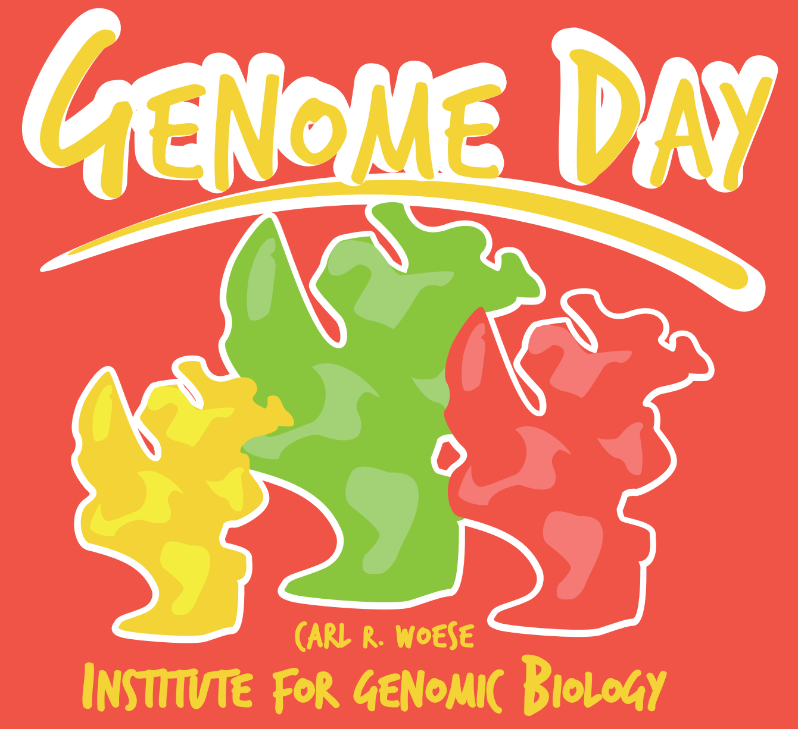

I am a Life Sciences Research Foundation Postdoctoral Fellow, and a Carl R. Woese Institute for Genomic Biology Fellow
at the University of Illinois.
My research falls at the intersection of microbial physiology and evolution: I employ techniques
from both fields to understand the fundamental biology of methanogenic and methanotrophic Archaea,
an important class of organisms within the third domain of Life,
with wide-ranging implications in climate change, renewable fuels, and human health.
About Me
I am a Life Science Research Foundation Fellow courtesy of the Simons Foundation (awarded nationally to ~30 from over 1000 candidates in all fields of life sciences), and a Carl R. Woese Institute for Genomic Biology Fellow at the University of Illinois, working with Prof. William W. Metcalf. I received my PhD from the Department of Organismic and Evolutionary Biology at Harvard University, under the direction of Prof. Christopher J. Marx in 2014, and a Masters degree from the Department of Civil and Environmental Engineering at Stanford University in 2009. My PhD research focused on using experimental evolution as a forward genetic screen to study metabolism and stress response in microorganisms that grow on reduced single-carbon compounds (methylotrophs). My postdoctoral research has focused on the physiology and evolution of methanogenic archaea, employing Cas9-based genome editing tools — the first successful application of Cas9-mediated genome editing in a member of the archaeal domain.Motivation and Research Interests
Methane is a tremendous societal burden and a valuable resource: on the one hand, it is a potent greenhouse gas, and on the other, it is a cheap, renewable fuel with immense potential for manufacturing value-added chemicals. Technological advances are needed at both ends: for mitigating atmospheric emissions, as well as converting organic-rich effluents to methane. At the heart of these problems, and their solutions, lie methanogenic and methanotrophic archaea: the primary producers and consumers of methane respectively.
Despite being ubiquitous, archaea are among the least-characterized life forms on Earth. A strictly anoxic lifestyle and slow growth have particularly impeded comprehensive studies of methanogenic and methanotrophic archaea; therefore our understanding of these pivotal microorganisms is severely deficient. By integrating an evolutionary framework with a rapid, multiplexed genome editing toolkit my research aims to overcome these roadblocks. In on-going work, I am designing a wide-range of experimental platforms to test prevailing hypotheses, as well as discover novel and unique features of methanogenic and methanotrophic archaea.
Broadly, I work at the intersection of physiology and evolution to understand the fundamental and distinctive biology of methanogenic and methanotrophic archaea, from a cellular, organismal, and community perspective. This knowledge is key to designing optimized solutions for aforementioned environmental and biotechnological problems.
Publications
- D. D. Nayak, N. Mahanta, D.A. Mitchell, W.W. Metcalf,
Post-translational thioamidation of methyl-coenzyme M reductase, a key enzyme in methanogenic and methanotrophic Archaea,
eLife, doi: 10.7554/eLife.29218, 2017.
- Methyl-coenzyme M reductase (MCR) is found in methanogenic and methanotrophic archaea and catalyzes the reversible production and consumption of methane
- A highly unusual thioglycine modification, in which the peptide amide bond is converted to a thioamide, is present in the α-subunit of all characterized MCRs and is implicated to play a critical role in catalysis
- Using our Cas9-mediated genome editing tools, we show that mutants of the methanogen Methanosarcina acetivorans with deletions in the ycaO-tfuA operon are viable and lack the thioglycine modification in MCR
- Our analyses support a role for thioglycine in stabilizing the protein secondary structure near the active site of MCR
- D. D. Nayak, W.W. Metcalf, Cas9-mediated genome editing in the methanogenic archaeon Methanosarcina acetivorans, Proceedings of the National Academy of Sciences (PNAS), doi: 10.1073/pnas.1618596114, 2017.
- We report the development of the first Cas9-mediated genome editing tool for an archaeon, the slow-growing methanogen Methanosarcina acetivorans
- Introduction of both insertions and deletions by homology directed repair (HDR) is efficient and precise (~ 20% of transformation efficiency) without any detectable off-target activity
- Multiple single guide RNAs (sgRNAs) can be expressed in the same transcript and allows simultaneous construction of double mutants with high efficiency
- Co-expression of the non-homologous end joining (NHEJ) machinery from the closely related archaeon, Methanocella paludicola, allows for efficient Cas9-mediated genome editing without the need for a repair template
Press and other mentions:- "Finally, Archaea Get Their CRISPR-Cas Toolbox", spotlight article in Trends in Microbiology, Volume 25, Issue 6, June 2017, Pages 430-432. Abstract: "The majority of archaea encode CRISPR-Cas systems but only a few CRISPR-Cas-based genetic tools have been developed for organisms from this domain. Nayak and Metcalf have harnessed a bacterial Cas9 protein for genome editing in Methanosarcina acetivorans, enabling efficient gene deletion and replacement."
- "A New Tool for Genetically Engineering the Oldest Branch of Life", article by Institute of Genomic Biology, covered by Department of Energy (DOE) University Research News, Phys.org, Science Daily.
- D. D. Nayak, D. Agashe, M-C Lee, C.J. Marx, Selection maintains apparently degenerate metabolic pathways
due to tradeoffs in using methylamine for carbon versus nitrogen, Current Biology, Cell Press, Volume 26,
Issue 11, pp 1416–1426, 2016.
- Methylotrophic bacteria grow on reduced single-carbon compounds and commonly encode two functionally degenerate non-orthologous pathways for methylamine oxidation
- We show that, despite catalyzing the same reaction, each pathway has a distinct function in the methylotroph Methylobacterium extorquens AM1
- The periplasmic route for methylamine oxidation, mediated by methylamine dehydrogenase, enables optimal utilization of methylamine as a growth substrate
- The cytoplasmic route for methylamine oxidation, mediated by the N-methylglutamate pathway, leads to efficient nitrogen assimilation from methylamine, especially at low concentrations
- Our analyses indicate that tradeoffs between cellular localization and ammonium toxicity select for this functional degeneracy
Press Mentions:- "Evolving an Explanation", article by the University of Idaho Press.
- D. D. Nayak, C.J. Marx, Experimental horizontal gene transfer of methylamine dehydrogenase mimics prevalent
exchange in nature and overcomes the methylamine growth constraints posed by the sub-optimal N-methylglutamate
pathway, Microorganisms, Volume 3, Issue 1, pp 60–79, 2015.
- Methylotrophic bacteria that grow on the reduced single-carbon compound methylamine encode either one or both of the characterized metabolic modules for methylamine oxidation
- Phylogenetic analyses demonstrate that the N-methylglutamate (NMG) pathway is more widely distributed and follows the vertical phylogeny of methylotrophs. In contrast, the distribution of methylamine dehydrogenase (MaDH) is patchy and indicative of numerous horizontal gene transfer (HGT) events.
- Phenotypic analyses of Methylobacterium extorquens strains indicates that the presence of MaDH is correlated with significantly higher fitness on methylamine
- Mimicking a HGT event in the laboratory, by introducing MaDH in M. extorquens PA1, a strain that only encodes the NMG pathway, increases fitness by 11-fold instantaneously
- In contrast, even after 150 generations of experimental evolution on methylamine the fitness of M. extorquens PA1 does not increase
- Our analyses indicate that HGT can overcome adaptive constraints posed by sub-optimal metabolic modules
- D. D. Nayak, C.J. Marx, Methylamine utilization via the N-methylglutamate pathway in Methylobacterium
extorquens PA1 involves a novel flow of carbon through C1 assimilation and dissimilation pathways, J.
Bacteriology, Volume 196, Issue 23, pp 4130–4139, 2014.
- Although poorly characterized, the N-methylglutamate (NMG) pathway is the prevalent module for methylamine oxidation in methylotrophs
- Our genetic analyses of the NMG pathway in Methylobacterium extorquens PA1 supports a linear topology for this pathway
- We show that the end-product of the NMG pathway gets dissimilated via the tetrahydromethanopterin (H4MPT) linked pathway and directly assimilated via the serine cycle, representing a novel route for C1 utilization in methylotrophs
- We also demonstrate that formaldehyde activating enzyme (FAE) and its homologs (FAE2, FAE3) have distinct roles during methylamine growth in M. extorquens PA1
- D. D. Nayak, C.J. Marx, Genotypic and phenotypic comparison of methylotrophy between Methylobacterium
strains AM1 and PA1, PloS One, 9(9): e107887, 2014.
- We report the development of a new model organism for laboratory analyses of the methylotrophy, the ability to grow on reduced single-carbon compounds: Methylobacterium extorquens PA1
- We perform genomic analyses to show M. extorquens PA1 has the same repertoire of core methylotrophy genes as M. extorquens AM1 , a closely-related model strain used for genetic and biochemical analyses of methylotrophy
- We perform genetic analyses to show that core methylotrophy genes in PA1 have the same function characterized in AM1
- However, we demonstrate that PA1 grows faster under most conditions and also has a streamlined genome compared to AM1
- Overall, our analyses indicate that PA1 is more suited for laboratory studies, especially long-term evolution experiments
- B. Boonchayaanant, D. D. Nayak, D. Xin, C. Criddle, Uranium Reduction and Resistance to Reoxidation under Iron-reducing and Sulfate-reducing Conditions, Water Research, Volume 43, Issue 18, pp 4652–4664, 2009
Manuscripts
- D. D. Nayak, M. Davlieva, T. Ticak, J. V. Bazurto, J. L. Johnson, F. M. Ytreberg, Y. Shamoo, C. J. Marx, EfgA halts bacterial translation in response to intracellular formaldehyde. In preparation for Cell.
- D. D. Nayak, W. W. Metcalf. Methylamine-specific methyltransferases in Methanosarcina spp. are functionality distinct despite frequent gene conversion. In preparation for PloS Biology.
Honors and Awards
- Best Poster Award (1 out of ~100 posters) at the Gordon Research Conference on Applied and Environmental Microbiology (2017)
- Best Poster Award (3 out of ~100 posters) at the Gordon Research Conference on the Molecular Basis of Microbial One-Carbon Metabolism (2016)
- Life Sciences Research Foundation Postdoctoral Fellowship, with $50,000 salary and $10,000 research expenses per year for three years—awarded nationally to ~30 from over 1000 candidates in all fields of life sciences (Aug. 2015—)
- Carl R. Woese Institute for Genomic Biology Postdoctoral Fellowship at the University of Illinois at Urbana-Champaign, with $50,000 salary and $7,500 research expenses per year for three years. (Jan. 2015—Aug. 2015: salary and research support; Aug. 2015—: research support only)
- Certificate of Distinction in Teaching for 'Microbial Evolution' from Harvard University (2013)
- Young Investigator Oral Abstract Presentation from the American Society of Microbiology, San Francisco, CA (2013)
- The Sigma Xi Grant in Aid-of-Research (2012)
- Multiple graduate fellowships from Harvard University (2009) and Stanford University (2007)
Service
 Chair and Vice-Chair of Gordon Research Seminars
Chair and Vice-Chair of Gordon Research Seminars
I served as the Vice-Chair (in 2014) and Chair (in 2016) for the Gordon Research Seminar (GRS) on the ‘Molecular Basis of Microbial One-Carbon Metabolism’. This seminar is held for two days prior to the corresponding Gordon Research Conference (GRC) and is organized by and for early-career scientists. As the Chair, my duties involved screening and selecting ~50 participants from all over the globe, inviting prominent scientists as keynote speakers and discussion leaders, and also acquiring external funding for the meeting. In addition, I developed a mentorship component for the 2016 meeting titled ‘Scientific careers beyond the PhD and postdoc’, which included scientists from industry and academia as well as a senior editor for Science.
 Microbial Science Initiative Journal Club
Microbial Science Initiative Journal Club
As a graduate student at Harvard, I helped establish the Microbial Sciences Initiative (MSI) summer journal club, and was in-charge of running this cross-disciplinary event for its first two years. The MSI journal club is now in its sixth year, and continues to attract a number of graduate students and postdocs across campus.
Outreach
I have actively sought out a number of outreach activities as a PhD student and PostDoc.
The Microbiology of Food and Drink: Public Talk and Other Activities
I have designed a broadly accessible talk on the microbiology of food and drink, and delivered it at a number of venues, including the Chambana Science Cafe in Urbana, the Beacon Hill Seminars, and the Science in the News Lecture Series at the Harvard Medical School. I have used this talk as a vehicle to introduce some of my work on microbial evolution and physiology. Please email me if you'd like to use my slides! I have also collaborated with a cheese monger to culture and showcase the fascinating microbiology of cheese at the Cambridge Science Festival. I have also presented a talk titled ‘The role of hops and the mechanism of bacterial resistance to hops’ at an MSI (Microbial Science Initiative) workshop.
 Interactive Activity for Kids in Grades K-4
I designed an activity for the Carl R. Woese Institute of Genomic Biology Genome Day highlighting the extremophilic nature of archaea, targeted at kids in grades K-4. The activity showcased archaea as superheroes with extremophilic superpowers and the goal was to match superheros with an appropriate superpower that will allow them to inhabit various extreme environments on our Planet. If you're a science teacher and would like to use this activity in your class, I would love to speak to you — please reach out!